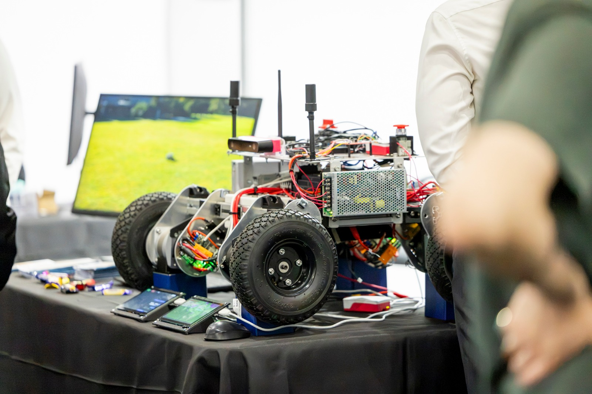

Knuckey Autonomous Rover
ROS 2 · Gazebo · Isaac Sim · Nav2 · Sensor Fusion
Award-winning agricultural rover autonomy project. Developed and validated simulation and navigation workflows, including stereo perception and GPS/IMU/odometry fusion.
Explore project →